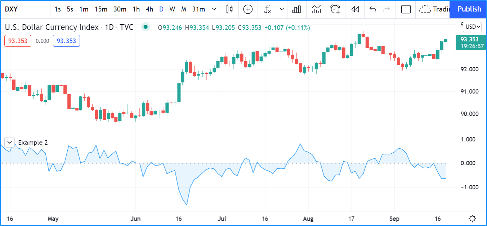
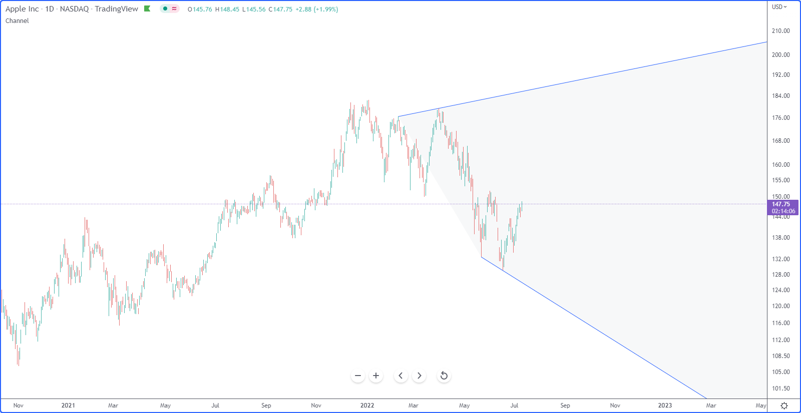

Fills¶
Introduction¶
There are two different mechanisms dedicated to filling the space between Pine visuals:
- The fill() function lets you color the background between either two plots plotted using plot() or two horizontal lines plotted using hline().
- The linefill.new() function fills the space between lines created with line.new().
`plot()` and `hline()` fills¶
The fill() function has two signatures:
fill(plot1, plot2, color, title, editable, show_last, fillgaps) → void
fill(hline1, hline2, color, title, editable, fillgaps) → void
The arguments used for the plot1, plot2, hline1 and hline2 parameters must be the IDs returned by the
plot() and
hline() calls.
The fill() function is the only built-in function where these IDs are used.
See in this first example how the IDs returned by the
plot() and
hline() calls
are captured in the p1, p2, p3, and h1, h2, h3 and h4 variables
for reuse as fill() arguments:
//@version=5
indicator("Example 1")
p1 = plot(math.sin(high))
p2 = plot(math.cos(low))
p3 = plot(math.sin(close))
fill(p1, p3, color.new(color.red, 90))
fill(p2, p3, color.new(color.blue, 90))
h1 = hline(0)
h2 = hline(1.0)
h3 = hline(0.5)
h4 = hline(1.5)
fill(h1, h2, color.new(color.yellow, 90))
fill(h3, h4, color.new(color.lime, 90))
Because fill() requires two IDs from the same function, we sometimes need to use a plot() call where we would have otherwise used an hline() call, as in this example:
//@version=5
indicator("Example 2")
src = close
ma = ta.sma(src, 10)
osc = 100 * (ma - src) / ma
oscPlotID = plot(osc)
// An `hline()` would not work here because two `plot()` calls are needed.
zeroPlotID = plot(0, "Zero", color.silver, 1, plot.style_circles)
fill(oscPlotID, zeroPlotID, color.new(color.blue, 90))
Because a “series color” can be used as an argument for the color parameter in
fill(),
you can use constants like color.red or #FF001A, as well as expressions
calculating the color on each bar, as in this example:
//@version=5
indicator("Example 3", "", true)
line1 = ta.sma(close, 5)
line2 = ta.sma(close, 20)
p1PlotID = plot(line1)
p2PlotID = plot(line2)
fill(p1PlotID, p2PlotID, line1 > line2 ? color.new(color.green, 90) : color.new(color.red, 90))
Line fills¶
Linefills are objects that allow you to fill the space between two line drawings created via the line.new() function. A linefill object is displayed on the chart when the linefill.new() function is called. The function has the following signature:
linefill.new(line1, line2, color) → series linefill
The line1 and line2 arguments are the line IDs of the two lines to fill between. The color argument is the color of the fill.
Any two-line pair can only have one linefill between them, so successive calls to
linefill.new()
on the same pair of lines will replace the previous linefill with a new one.
The function returns the ID of the linefill object it created, which can be saved in a variable for use in
linefill.set_color() call that will change the color of an existing linefill.
The behavior of linefills is dependent on the lines they are attached to. Linefills cannot be moved directly; their coordinates follow those of the lines they are tied to. If both lines extend in the same direction, the linefill will also extend.
Note that for line extensions to work correctly, a line’s x1 coordinate must be less than its x2 coordinate.
If a line’s x1 argument is greater than its x2 argument and extend.left is used, the line will actually extend to the right
because x2 is assumed to be the rightmost x coordinate.
In the example below, our indicator draws two lines connecting the last two high and low pivot points of the chart. We extend the lines to the right to project the short-term movement of the chart, and fill the space between them to enhance the visibility of the channel the lines create:
//@version=5
indicator("Channel", overlay = true)
LEN_LEFT = 15
LEN_RIGHT = 5
pH = ta.pivothigh(LEN_LEFT, LEN_RIGHT)
pL = ta.pivotlow(LEN_LEFT, LEN_RIGHT)
// Bar indices of pivot points
pH_x1 = ta.valuewhen(pH, bar_index, 1) - LEN_RIGHT
pH_x2 = ta.valuewhen(pH, bar_index, 0) - LEN_RIGHT
pL_x1 = ta.valuewhen(pL, bar_index, 1) - LEN_RIGHT
pL_x2 = ta.valuewhen(pL, bar_index, 0) - LEN_RIGHT
// Price values of pivot points
pH_y1 = ta.valuewhen(pH, pH, 1)
pH_y2 = ta.valuewhen(pH, pH, 0)
pL_y1 = ta.valuewhen(pL, pL, 1)
pL_y2 = ta.valuewhen(pL, pL, 0)
if barstate.islastconfirmedhistory
// Lines
lH = line.new(pH_x1, pH_y1, pH_x2, pH_y2, extend = extend.right)
lL = line.new(pL_x1, pL_y1, pL_x2, pL_y2, extend = extend.right)
// Fill
fillColor = switch
pH_y2 > pH_y1 and pL_y2 > pL_y1 => color.green
pH_y2 < pH_y1 and pL_y2 < pL_y1 => color.red
=> color.silver
linefill.new(lH, lL, color.new(fillColor, 90))